Improving .NET Code Quality With NDepend in Visual Studio and Azure DevOps

What is NDepend?
When developing software it's important to focus on fullfilling customer requirements, providing best possible user experience, performance, security, availability and many other -ilities to ensure success of the software you're building, as well as keep your current users loyal and happy about your product. It's equally important to keep the code base maintainable and clean, minimize complexity, dependencies and technical debt, ensure that the new code follows the same quality and design standards as the rest of the code base. This is something that's extremely difficult to achieve manually, especially when you have a bigger application with tens of developers working on it. Fortunately for us there are many tools in the industry that may help us with this. Recently I got an opportunity to explore and experiment with a tool called NDepend and I would like to share some of the possibilities this tool provides in this blog post.
NDepend has a long history dating back to 2004 and it has gained quite a lot of popularity in the .NET community through the years. I've heard about NDepend many times before and from time to time stumbled upon reviews from other developers, but now the time has come to test it out myself and see what the tool is capable of.
So what is NDepend? It's a static code analysis tool for .NET applications. The tool is quite extensive and has a lot of use cases starting from architecture-related functionality like building project and class dependency diagrams to incorporating build quality policies as part of CI/CD pipelines in Azure DevOps and other CI servers. Documentation is pretty detailed and extensive which makes it pretty easy to get started and get your hands dirty with the tool.
Since there are so many use cases and so many possibilities NDepend has to offer I will not be going through all of them, but I will focus on one specific use cases which I was experimenting with: incorporating code quality analysis and enforcing code quality policies with NDepend through Azure DevOps and Visual Studio extensions.
Please note: NDepend is a subscription-based commercial tool and you will need to buy a license in order to be able to use it. There is a 14-day trial period available for NDepend for Developer and Build Machine licenses, and a 28-day trial period for Azure DevOps/TFS extension. You can check out available licensing options here: NDepend Licensing Options and compare NDepend Editions here: Compare NDepend Editions.
Improving and enforcing source code quality with NDepend Azure DevOps extension
NDepend extension for Azure DevOps is available in Visual Studio Marketplace and installation is pretty straightforward, just as for any other Azure DevOps extension. You can install it from here: Code Quality NDepend for Azure DevOps, TFS 2017 and TFS 2018. Once the extension is installed you should be able to see a section called "NDepend" in the Overview tab in Azure DevOps.
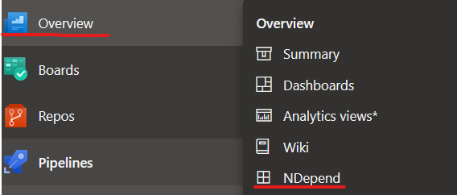
What I really liked about this extension is that all the analysis is performed locally, on the build agent where the analysis is performed. It means that no data is being transferred outside of the server which is an advantage in terms of supply chain security and security of your source code. In the same page, where you install the extension, you can find instructions on how to activate the trial license in case you haven't acquired a Pro license yet.
Once the license is applied in Azure DevOps you can start experimenting with NDepend. So let's get straight to it!
Adding NDepend Build Task
Build task to set up analysis with NDepend is pretty easy and straightforward to set up - here I've configured the basic build task for a repo with 2 projects in it, with default configuration. Please note that this task can only run on a Windows build agent at the moment. The task is added after the unit test execution task for a more representative analysis:
#azure-pipelines.yaml
- task: NDependTask@1
displayName: 'NDepend Scan'
env:
SYSTEM_ACCESSTOKEN: $(System.AccessToken) # NDepend needs access to the token to be able to compare builds
inputs:
viewname: test-web
excluded: '.*Test*'
Assemblies: false
BuildGates: false
PullRequest2: false
iscoverage: false
If you want to generate multiple views with different configurations, you can add multiple build tasks with different viewname property (which is also called Perspective in official NDepend documentation), but you always operate with the build task of one type - NDependTask@1. Here we're excluding test projects from the analysis and are not enforcing any quality gates just yet. Also, we haven't enabled code coverage as of now, and shortly we'll see why it can be useful to enable it. But first let's see what the output of the build will be once this task is added. I liked that the task executes quite fast - it took no more than 4-5 minutes for a repo with 200+ projects and from my experience, quite few tools can handle such amount of projects this fast. This makes it an advantage since it doesn't increase the build time significantly and can still run as part of the pull request build for instance, to enforce additional quality gates for the code check-ins.
NDepend build output and Azure DevOps Dashboard
Once the build has executed we can see in the Artifacts section that quite a few files with analysis results were published by NDepend - these files can be used to investigate the results locally, or they can be used as examples/blueprint for defining your own custom rules, trends, quality gates, etc.
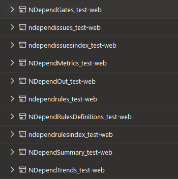
Next, let's navigate to "Extensions" pane:
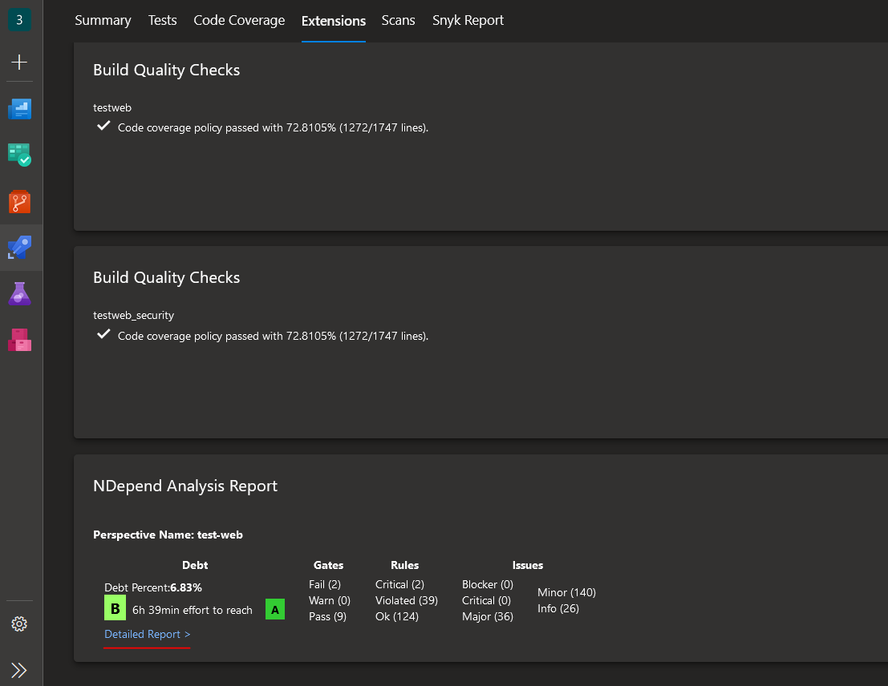
Here we can see a brief summary of the analysis result, including the quality rating of our source code which is currently at level B. We'll see how this will change once we enable code coverage. But first, let's click on the "Detailed report" link as marked in the screenshot. We'll then be redirected to a dedicated NDepend page in Azure DevOps where we can investigate in more detail all the findings discovered by the extension, visualized trends, and change comparison with the defined baseline.
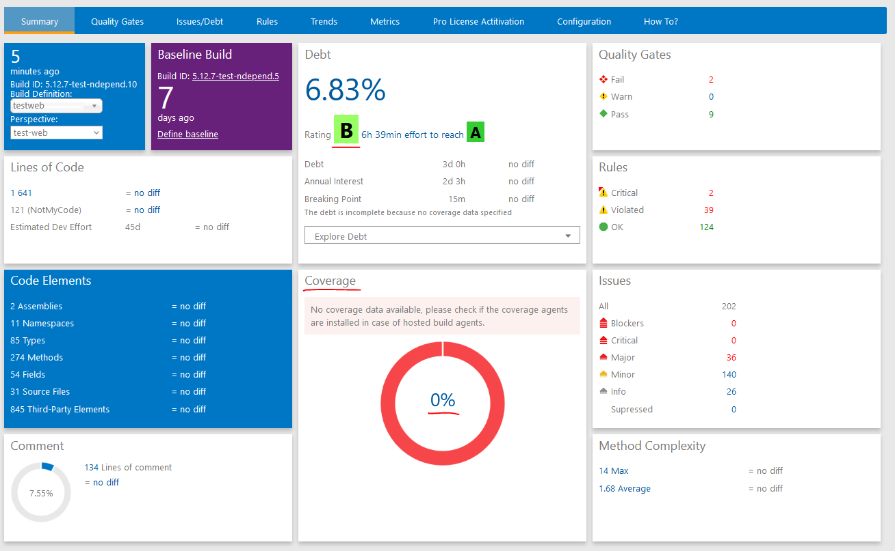
Adding code coverage to NDepend analysis
Now, code coverage statistics is showing 0% and in order to get a more realistic analysis we need to enable code coverage. Fortunately, I've already enabled code coverage build task for the current repository, where I'm utilizing Coverlet coverage framework. Let's let NDepend know where it can retrieve code coverage results for it's analysis. Please note that you need to configure code coverage to provide a report in OpenCover format - that's the Coverlet output format that is supported by NDepend as of now. In the example below I've configured multiple report formats since I'm using code coverage results for multiple purposes. You can find more information about usage of code coverage in NDepend, as well as what code coverage frameworks are supported by the tool here: Importing Code Coverage Results in the NDepend Code Model.
We can enable code coverage in NDepend build task by enabling iscoverage property and providing path to the code coverage results in coverage property, as demonstrated in the build pipeline definition below:
#azure-pipelines.yaml
- task: DotNetCoreCLI@2
displayName: 'Run all tests'
inputs:
command: test
projects: '**/*Test*/*.csproj'
configuration: '$(BuildConfiguration)'
arguments: '/p:CollectCoverage=true "/p:CoverletOutputFormat=\"cobertura,opencover\"" /p:CoverletOutput=./CodeCoverage/'
publishTestResults: true
- task: PublishCodeCoverageResults@1
displayName: 'Publish Code Coverage Results'
inputs:
codeCoverageTool: 'Cobertura'
summaryFileLocation: '$(Build.SourcesDirectory)/**/CodeCoverage/coverage.net5.0.cobertura.xml'
failIfCoverageEmpty: true
- task: NDependTask@1
displayName: 'NDepend Scan'
env:
SYSTEM_ACCESSTOKEN: $(System.AccessToken) # NDepend needs access to the token to be able to compare builds
inputs:
viewname: test-web
excluded: '.*Test*'
Assemblies: false
BuildGates: false
PullRequest2: false
iscoverage: true
coverage: '$(Build.SourcesDirectory)/**/CodeCoverage'
Now, that we've enabled code coverage analysis as well, let's take a look how the results have changed since the first run:
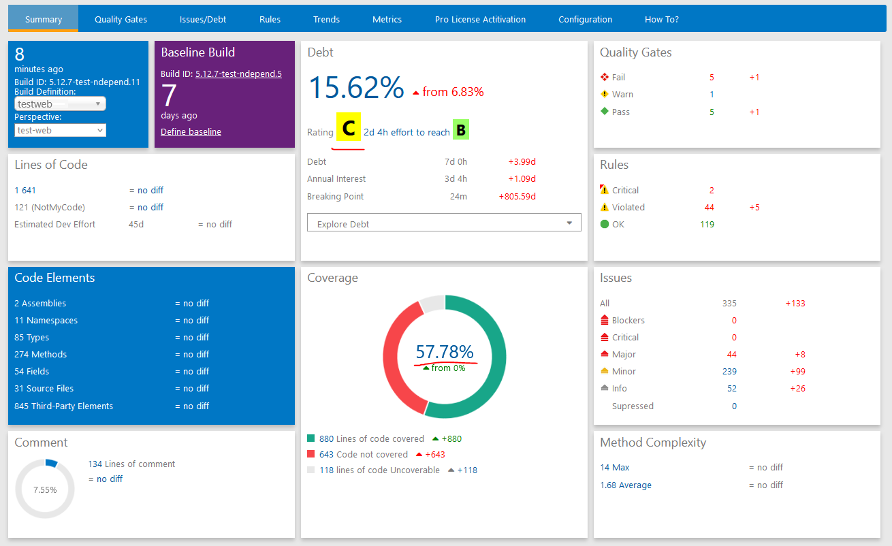
As you can see, enabling code coverage had a significant effect! Quality rating went down to level C with technical debt increase of almost 7%, compared to the previous build execution. You can also see multiple changes in Quality Gates, Rules and Issues sections. It means that we have quite some work to do when it comes to improving the code quality of our source code ;)
Adding code coverage from external location to NDepend analysis
In some cases you may be running code coverage outside of the main build pipeline and can't therefore connect it to NDepend directly, because the report files are located externally, on a totally different build agent. This is the case for one of my repos where there are 200+ projects - running code coverage as part of the pull request or main build pipeline isn't realistic - it will add more than 1 hour to the main build execution time. Therefore code coverage is running in a dedicated build pipeline but I can still add it to analysis with NDepend and enforce policies with following adjustment:
#azure-pipelines.yaml
- task: PublishCodeCoverageResults@1
displayName: 'Publish Code Coverage Results:Test BL Build'
inputs:
codeCoverageTool: 'Cobertura'
summaryFileLocation: '$(Build.SourcesDirectory)/**/CodeCoverage/Cobertura.xml'
additionalCodeCoverageFiles: '**/CodeCoverage/coverage.net5.0.opencover.xml' # add this to publish reports in Opencover format as an additional build artifact
failIfCoverageEmpty: true
- task: DownloadBuildArtifacts@1
inputs:
buildType: 'specific'
project: '875e9197-a240-437c-92ef-e6fcf8e0a336' # update this value with your Azure DevOps project ID
pipeline: '1111' # update this value with your code coverage pipeline ID
buildVersionToDownload: 'latest'
downloadType: 'specific'
itemPattern: '**/*opencover.xml'
downloadPath: '$(Build.SourcesDirectory)/cc-results/CodeCoverage'
- task: NDependTask@1
displayName: 'NDependTask'
env:
SYSTEM_ACCESSTOKEN: $(System.AccessToken)
inputs:
viewname: test-bl
excluded: '.*Test*'
Assemblies: false
BuildGates: false
PullRequest2: false
iscoverage: true
coverage: '$(Build.SourcesDirectory)/cc-results/CodeCoverage'
First, we add publishing of code coverage report files in Opencover format as an additional build artifact, since that's the format supported by NDepend. Then, we download the reports from the latest succeeded build for code coverage and enable analysis for the same in NDepend build task. In that way we can connect code coverage data located externally to NDepend analysis - and it doesn't increase the main build duration time more than with a few seconds! :)
Trends section in NDepend Dashboard in Azure DevOps
There is a lot of information in NDepend dashboard that you can use for further analysis of your source code. I will not go through all of it since it's well described in the official documentation but I love visualization, therefore I would like to mention the Trends section of NDepend dashboard. In Trends section you can find a lot of useful diagrams which will demonstrate latest changes compared to the established baseline:
- Total size of the analyzed source code
- Code coverage and technical debt percentage
- Total amount of discovered high criticality issues and new/fixed issues compared to baseline
- Total amount of rules, including violated rules
- Total amount of quality gates, including failed quality gates
- Total ammount of technical debt
Here's an example of how code coverage and technical debt trends changed once we added code coverage to NDepend analysis:
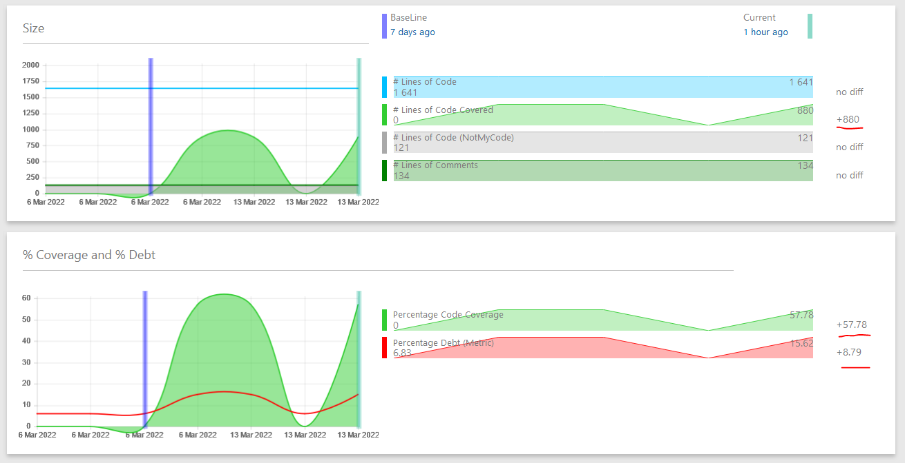
You can customize this section with your own Trends, you can find more information on how to do it here: Monitor Code Trend.
Enabling NDepend quality gate checks in build pipeline
Lastly, I would like to enforce NDepend quality gates so that the build fails if at least one quality gate is violated. In addition I will add a new custom rule that is not included in the default collection provided by NDepend. But first let's enable quality gate build policy by setting BuildGates property to true so that our NDepend build task looks like this:
#azure-pipelines.yaml
- task: NDependTask@1
displayName: 'NDependTask'
env:
SYSTEM_ACCESSTOKEN: $(System.AccessToken)
inputs:
viewname: test-bl
excluded: '.*Test*'
Assemblies: false
BuildGates: true # <- Set this property to true to enable build quality gates!
PullRequest2: false
iscoverage: true
coverage: '$(Build.SourcesDirectory)/**/CodeCoverage'
Once this is done we can execute a new build. You can see that the build now fails because at least one quality gate failed:
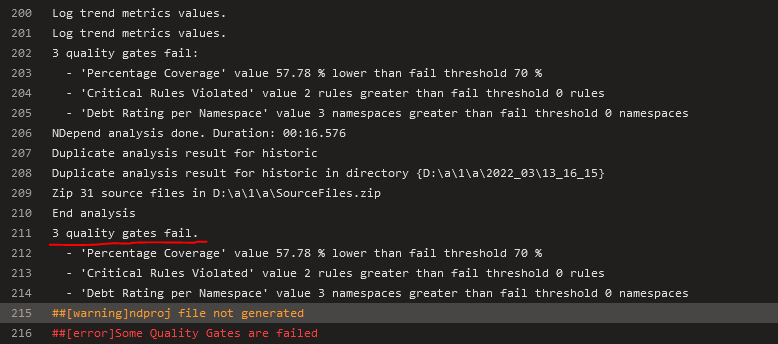
Actually there are 3 quality gates that failed…well, let's fix that! First of all, I would like to update code coverage quality gate to fail only when fail threshold goes beyond 50% and not 70% - we need time to build up high code coverage, therefore we can't enforce such a high coverage percentage just yet. Also, I would like to deactivate one quality gate and resolve the other - in some cases you may find out that some quality gates or rules are not applicable for your use case and it's OK to deactivate/suppress validation of those. Finally, I would like to add my own, custom rule and connect it to one of the default quality gates.
In the next section I will show you how you can do all of that in Visual Studio with NDepend Extension.
Quality gate and rule management with NDepend VS Extension
Firstly, you will need to install NDepend Visual Studio Extension - you can read here how: Installing the NDepend extension for Visual Studio 2022, 2019, 2017, 2015, 2013, 2012 or 2010.
Running initial NDepend analysis in Visual Studio
Once NDepend extension is installed we need to build our solution so that extension is able to locate the project assemblies for analysis.
Before we do that, we must add one important adjustment. Since we're going to suppress specific issues, we must add CODE_ANALYSIS compilation symbol so that suppression attributes are included into project compilation. I have only one project in my example so I'll add following property to the project file:
// MyProj.Web.csproj
<PropertyGroup>
<DefineConstants>CODE_ANALYSIS</DefineConstants>
// REMAINING CODE IS OMITTED ...
</PropertyGroup>Now we're ready and can build the solution. Once our solution is built, we can analyze it's assemblies by following this guide: Analyzing a Visual Studio solution. Once analysis is complete, we get a pop-up window showing that analysis is now complete and presenting us with further options on what we can do - let's choose "View NDepend Dashboard". Please note that during analysis an .ndproj file was generated for us - this file will come in handy when we are going to modify the default configuration of NDepend analysis.
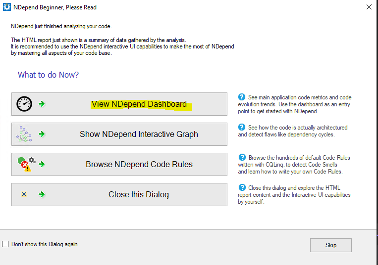
Here, we get redirected to a dashboard tab where we can see much of the same information we saw in the Azure DevOps dashboard, just that now we can operate on it locally, directly in our IDE this time.
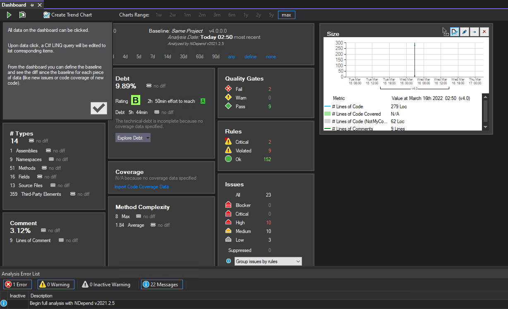
Modifying default quality gate
In the Dashboard, let's focus on "Quality Gates" section. We can see that currently 2 quality gates are failing but, based on the build error output in Azure DevOps in the previous section, we know that it's actually 3 build quality checks that are failing - quality gate related to code coverage percentage is currently not failing locally, because I haven't uploaded any code coverage data. But we can still update the quality gate for code coverage percentage so that fail threshold limit is set to 50% and not 70%. To do that, in "Quality Gates" section of the Dashboard let's click on "Pass" count - in my case it's a total of 9:
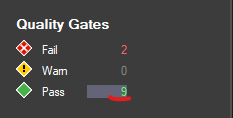
Once clicked, a collection of quality gates with detailed description will be populated on the right hand side - let's locate "Percentage Coverage" quality gate, right-click and choose "Edit Quality Gate":
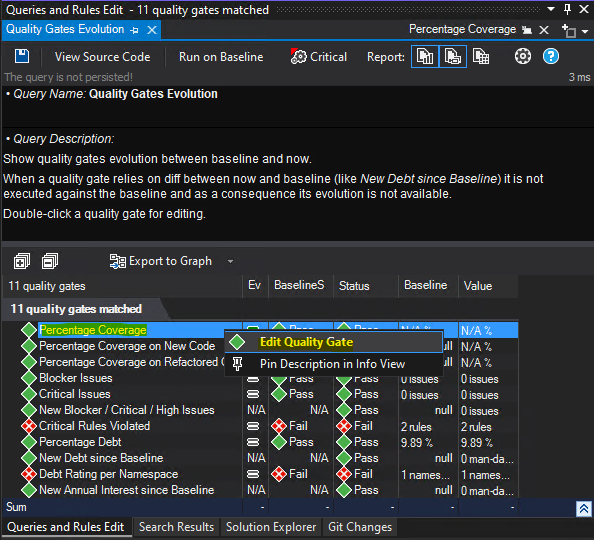
Next we can see the source code of quality gate definition. It's using CQLinq (Code Query LINQ) syntax which is used by NDepend to query .NET code through LINQ queries. You can learn more about CQLinq syntax here: CQLinq Syntax. Now, let's update faliure condition and change it from 70% to 50% and save the definition by clicking on "Save" icon in the top left of the "Queries and Rules Edit" section.
// QueryEdit Percentage Coverage
// <QualityGate Name="Percentage Coverage" Unit="%" />
failif value < 50% // <- update this value
warnif value < 80%
codeBase.PercentageCoverageNow, let's take care of the remaining default quality gates that have been violated.
Deactivate, Suppress and Resolve quality gate issues
Let's go back to "Quality Gates" section and click on "Fail" count.
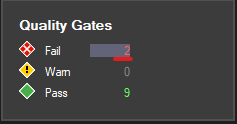
An overview of passed and failed quality gates with additional details will be populated on the right hand side.
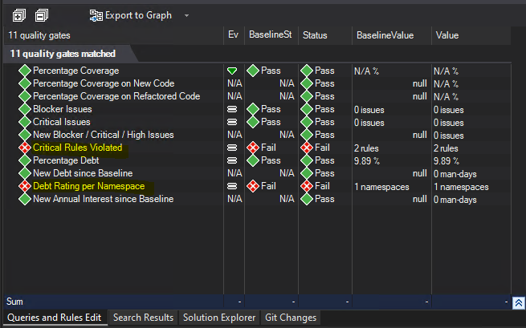
We have 2 failed quality gates - let's resolve the first one and deactivate the second one.
- Debt Rating per Namespace. Once we chose to display failed quality gates, in the bottom center of Visual Studio a new section appeared showing us the active quality gates with status "Failed". We can easily deactivate a quality gate by unchecking "Active" checkbox for it. So let's do this for the respective quality gate:
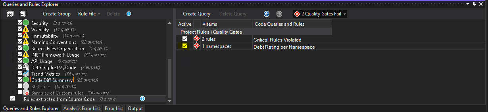
Once it's done, we can click "Save all" in Visual Studio - changes will then be added to the respective .ndproj file.
- Critical Rules Violated. As we can see, two critical rules have been violated and this is the reason for the quality gate failure. Let's double-click on the quality gate and see what rule violations we need to fix and where.
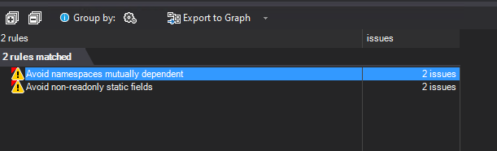
Let's double-click on the first rule - "Avoid namespaces mutually dependent" - now we can see where exactly the issue was identified. In the example below, the issue was identified in CreateHealthDataSource method in Startup.cs file. We can assume that it's not applicable for our use case and suppress it - we can do that by right-clicking on the method name and choosing "Suppress Issue":
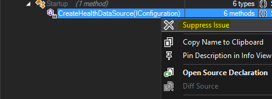
In the pop-up window we can see how the suppression attribute must be defined and where it should be placed. First choose "Copy SuppressMessage tag to Clipboard" and then "Open Source File Declaration". We'll be redirected to the exact place where we need to add the suppression attribute - the only thing we'll need to modify is "Justification" for why we're suppressing the issue. It can look something like this:
[SuppressMessage("NDepend", "ND1400:AvoidNamespacesMutuallyDependent", Justification = "Not Applicable validation")]
private HealthDataSourceBase CreateHealthDataSource(IConfiguration config)
{
Logger logger = new Logger();
// Rest of the method implementation in ommitted...
}Now, let's resolve the second rule violation - "Avoid non-readonly static fields". If we double-click on it, we get an overview and exact location of the fields that must be fixed. In my project there are two fields that were discovered that are defined like this:
static MemoryCache _resultsCache = new MemoryCache("HealthCache");
static SemaphoreSlim _semaphore = new SemaphoreSlim(1, 1);To fix the issue, I just need to add a readonly declaration like this:
static readonly MemoryCache _resultsCache = new MemoryCache("HealthCache");
static readonly SemaphoreSlim _semaphore = new SemaphoreSlim(1, 1);Normally a detailed description with information about why this is an issue, how it can be fixed or suppressed is provided if you hover over the rule in the "Queries and Rules Edit" tab:
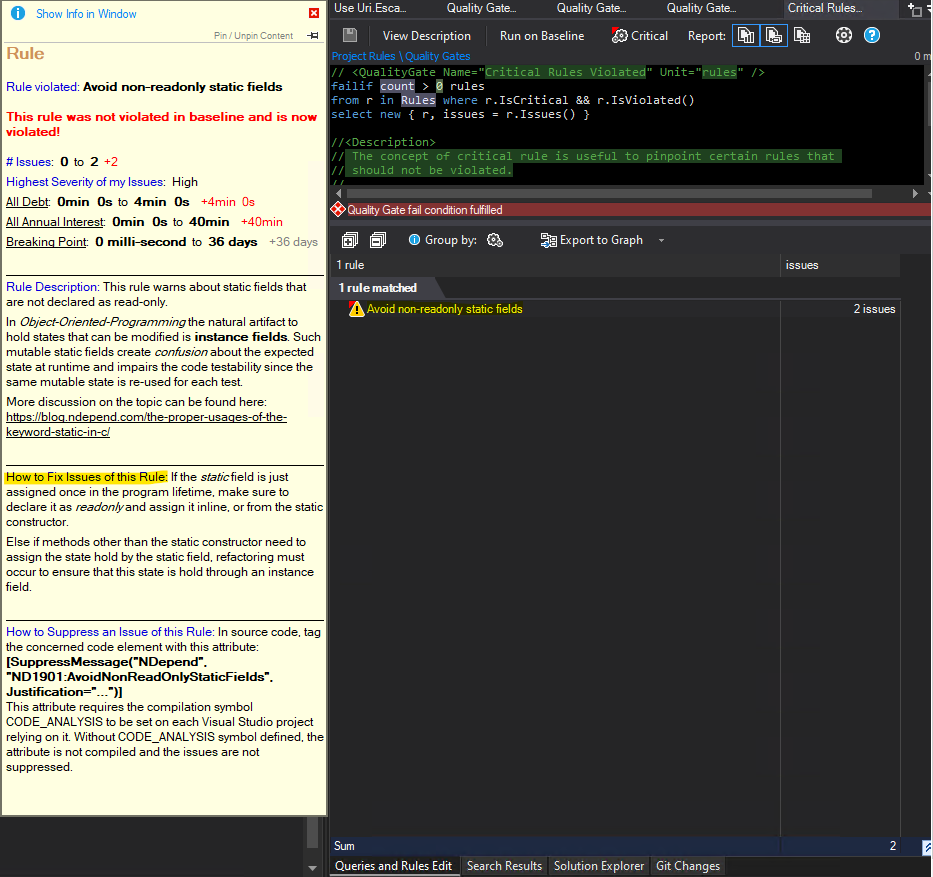
Now we can re-build our solution and re-run the analysis. Once it's done, no critical quality gates are failing anymore - great work! ^_^
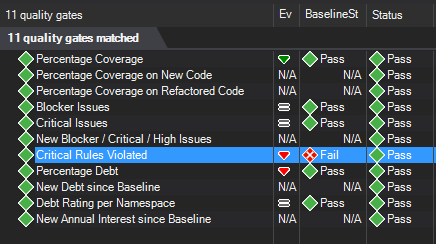
Lastly, let's add a custom rule and connect it to the existing default quality gate.
Adding custom rule and connecting it to existing quality gate
NDepend lets you customize code analysis in many ways and one of the ways is to add custom rules that can help you enforce even more granural code quality policies and coding guidelines. Let's see how we can do that. I would like to add a new rule that will prohibit usage of Uri.EscapeUriString(String) because this method is known for not escaping all the characters. Instead I want developers to use Uri.EscapeDataString(String).
In order to add a new custom rule I need to either choose an existing rule group or create a new one. I feel like this rule doesn´t belong in any of the existing groups and will therefore create a new rule group instead. In the bottom left of the VS in "Queries and Rules Explorer", let's ensure that "Project Rules" is selected as the root category. Next, let's choose "Create group" and give it a name - I'll call my new rule group "Kris Custom Quality Rules". In the section next to it we can then create new rules - let's create a rule that will enforce usage of valid URI escaping methods by choosing "Create Query" option.
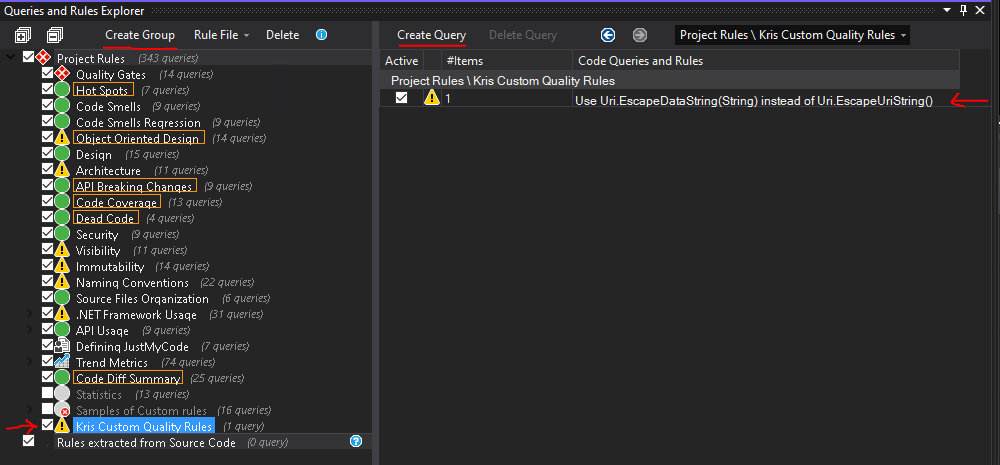
Once we created a new rule, a default rule implementation will be generated in the "Queries and Rules Edit" section. It's not yet saved and is marked as incomplete by default - let's fix that and update the rule.
What I liked when working with CQLinq is IntelliSense - it is very good. For each option detailed information is provided directly in the IDE so that you don't need to refer the documentation every signle time. It makes the development of custom configuration easier and more agile.
Complete rule implementation looks like this:
// <Name>Use Uri.EscapeDataString(String) instead of Uri.EscapeUriString()</Name>
warnif count > 0
let uriEscapeMethods = Types.WithFullName("System.Uri").ChildMethods().WithSimpleNameIn("EscapeUriString").ToHashSetEx()
from m in Application.Methods.UsingAny(uriEscapeMethods)
let mustntUse = m.MethodsCalled.Intersect(uriEscapeMethods)
select new {
m,
mustntUse,
Debt = 30.ToMinutes().ToDebt(),
Severity = Severity.Critical
}
//<Description>
// Uri.EscapeUriString() does not escape all the necessary characters and must not be used for escaping URL parameters
//</Description>
//<HowToFix>
// Use System.Uri.EscapeDataString(String) instead to properly escape URL parameters.
//</HowToFix>What's going on here? First of all, I've added a descriptive name for the new rule as well as detailed description and information on how to fix the issue in the bottom of the rule implementation. What the rule basically does is:
- Raise a warning if at least one object satisfying the query conditions was found.
- In all methods of the application find all places using
EscapeUriStringmethod ofSystem.Uritype. - For each discovered occurence, add 30 minutes to total technical debt time and define the severity of the issue as critical.
Please note that issue severity and rule severity are different concepts. By default this rule will only throw a warning in case it's violated and will therefore not cause any build quality gate failures. If I want the quality gate to fail in case this rule is violated I can go ahead with two approaches:
- Create a new quality gate that will fail when the rule is violated
- Connect this rule to an existing quality gate
The easiest would be to go with approach #2 and connect my new rule to an existing quality gate. You can see overview of all quality gates by clicking "Quality Gates" in "Queries and Rules Explorer". I would like to connect my rule to the default quality gate called "Critical rules violated".
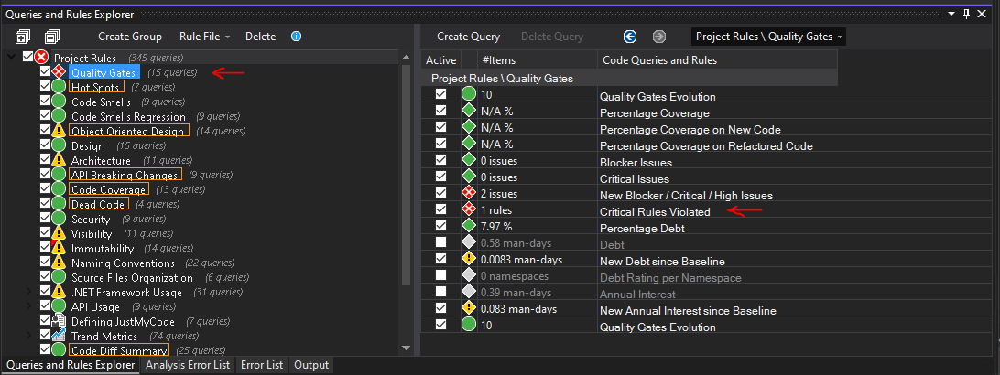
If we select the quality gate in the list we can see it's implementation in CQLinq on the right hand side - as you can see in the code snippet below, it will trigger only when rules of type "Critical" are violated. As I mentioned earlier, new rules are marked as non-critical by default, i.e. we need to mark our new rule as critical in order for this quality gate to be triggered. In order to do that we need to open the rule implementation in "Edit rule" section and click "Critical" button at the top of the section and click "Save" - it will then be marked as a critical rule in the generated ndproj file.
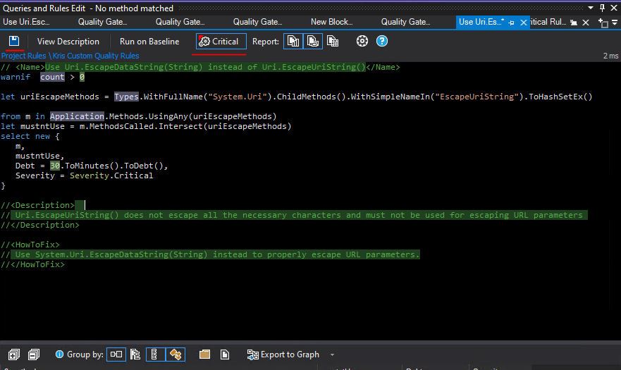
And we're ready for test! Let's continue further from the point where we left off in the previous section of the blog post: Enabling NDepend quality gate checks in build pipeline. In Azure DevOps we enabled NDepend build quality gate failure for the repo where current project exists and the build failed with 3 quality gate violations. Since then, with help of NDepend Visual Studio Extension we:
- updated one quality gate where we reduced the code coverage threshold percentage from 70%, which is the default value, to 50%
- deactivated "Debt Rating per Namespace" quality gate because it was not applicable for our use case
- resolved "Critical Rules Violated" quality gate which was triggered by violation of two rules - we deactivated "Avoid namespaces mutually dependent" rule and resolved issues identified by "Avoid non-readonly static fields" rule
- added our own "Kris Custom Quality Rules" rule group with a new custom rule - "Use Uri.EscapeDataString(String) instead of Uri.EscapeUriString(String)", and connected it to default "Critical rules violated" quality gate
So productive and efficient we've been so far! Now let's create some code that will violate our custom rule. Below I have a file in my test project where I'm using EscapeUriString method in the constructor of Logger class. This should trigger the rule violation and cause the build to fail.
//Logger.cs
public class Logger
{
Guid _correlationId = Guid.NewGuid();
int _indent;
string _escapedUri;
string _uri = "https://blabla.com";
public Logger()
{
Indent = 0;
_escapedUri = Uri.EscapeUriString(_uri); // <- we don't want this method to be called!
}
}Last thing before we check in our changes and start testing is to update NDepend build task and let NDepend know that we have added custom configuration that it needs to be aware of. Remember that auto-generated ndproj file that is created for us once we start modifying default NDepend configuration? That's the one we need to provide the path for in a new property called ndproj:
#azure-pipelines.yaml
- task: NDependTask@1
displayName: 'NDependTask'
env:
SYSTEM_ACCESSTOKEN: $(System.AccessToken)
inputs:
viewname: test-bl
ndproj: Source/MyProj.Web/MyProj.Web.ndproj # <- provide path to custom NDepend config here
excluded: '.*Test*'
Assemblies: false
BuildGates: true
PullRequest2: false
iscoverage: true
coverage: '$(Build.SourcesDirectory)/**/CodeCoverage'
Let's check in all our changes and trigger a new build - if we've done everything correctly, all 3 violations that were initially identified should now be resolved, but the build should still fail because we have code that violates our new custom rule - and therefore "Critical rules violated" quality gate.
Quick tip: before checking in the changes, do verify that you're checking in only what's needed. When you run analysis with NDepend locally, it will produce artifacts in a separate folder called "NDependOut" - you don't need to check that in to your source code, these files are meant for your reference and further analysis.
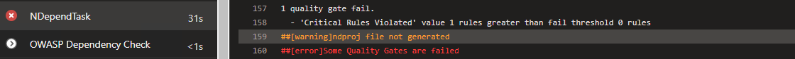
As we can see in the build output above, the build did fail and with the expected quality gate violation. If we navigate to the latest report in NDepend dasboard and check "Quality Gates" section, we can see that "Critical Rules Violated" quality gate failed, as expected:
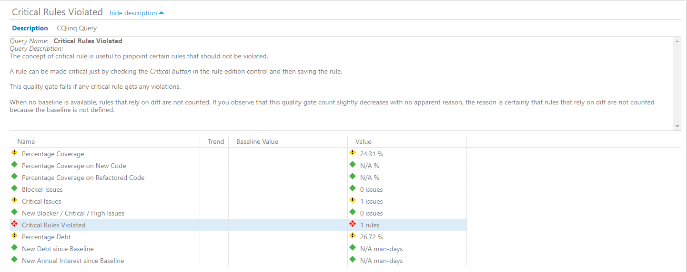
If we navigate to the "Rules" section we can see that it's exactly our new rule that was violated, just as we wanted it to. We can also see the exact location in code where the violation was detected.
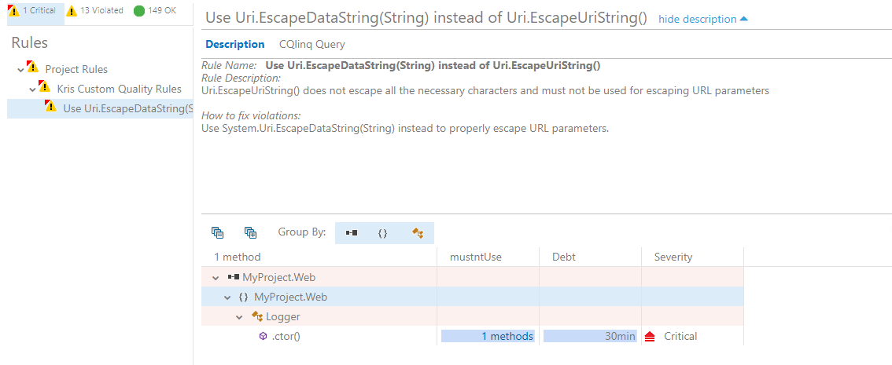
Finally, let's fix this issue and let the build succeed already! If we change replace _escapedUri = Uri.EscapeUriString(_uri); with _escapedUri = Uri.EscapeDataString(_uri);, commit this change and execute a new build, we can see that the build is now passing successfully and our custom rule doesn't detect any issues:
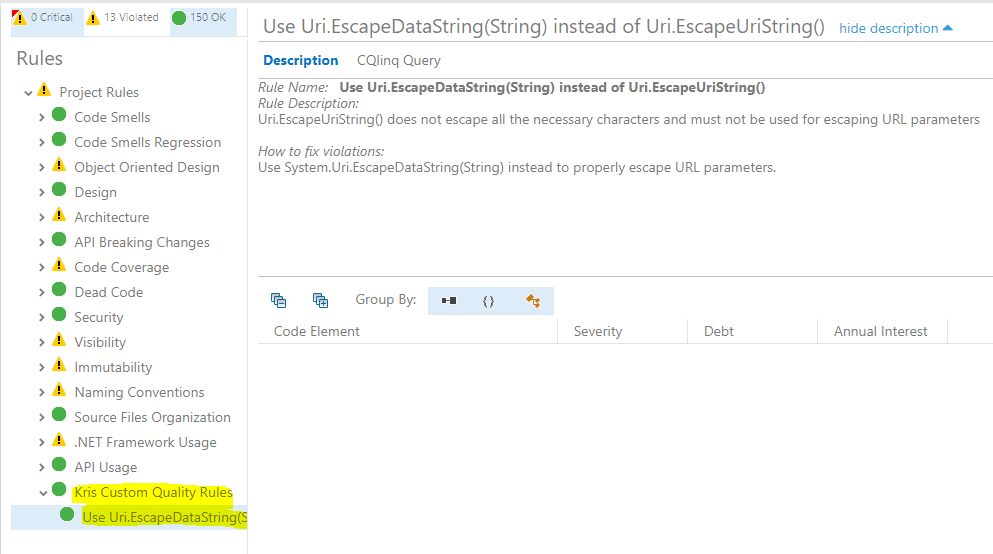
And that's how you can enforce code quality validations as part of pull request builds so that all new code is created in the same way and at the same high quality level! :)
Allright, this has been a long blog post but I really wanted to show the whole flow of implementing NDepend for static code analysis in Azure DevOps and how you can enforce code quality policies, including custom ones, in your organization. Hopefully this will help you out on your way in case you decide to acquire and implement NDepend in your project.
Additional resources
As I mentioned earlier in this blog post, official documentation for NDepend is pretty extensive and should help you a lot to start experimenting with the tool straight away.
-
All NDepend documentation is located here: NDepend Docs
-
NDepend Azure DevOps extension documentation is located here: Azure DevOps Services and Azure DevOps Server (TFS) Extension. Here you can also find extensions for other CI/CD servers like TeamCity or Jenkins.
At the time of publishing this post a new version of NDepend just got released - What’s new in NDepend v2022.1. One of the new features I liked in this release is ILSpy Plugin which lets you decompile and analyze assemblies directly in Visual Studio with NDepend Extension. If you haven't heard of or used ILSpy before, check out my post to get to know it: Could not load file or assembly…Oh my! How I went through five stages of grief and mastered assembly version conflict debugging with .NET CLI, ILSpy and Fusion Log
That's it from me this time, thanks for checking in! If this article was helpful, I'd love to hear about it! You can reach out to me on LinkedIn, GitHub or by using the contact form on this page :)
Stay secure, stay safe.
Till we connect again!